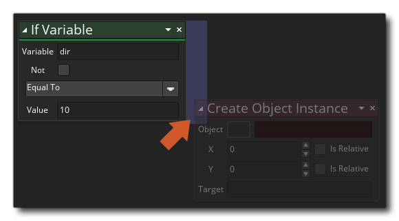
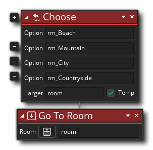

To add behaviours to objects you can construct your code using
Actions from the different libraries available to you from the
Action Toolbox. To start with you'll need to make a new
Drag and
Drop project and then make a new
object (you can assign a sprite
to the object too if required). In your new object you can start to
add events, and in
the events add your DnD™ code actions. 
Note that when you add a new event, a "code" window is opened with a tab for the given event (see the image above), and you can now drag any action you wish from the Toolbox on the right into the Action Block pane of the code window. Now, while it's true that you can add any action, that doesn't mean that they will all work or that the project will compile with them. Some actions require Variables to work, while others - like the Draw actions - will only work if used in a specific event. How do you know which ones to use? Well, generally, it's simply a question of using logic... if an action requires a variable and we haven't defined one yet, then we shouldn't be using it until we've added an action to create the variable.
When you drag an action from the Toolbox into the main Action
Block workspace, it will expand to show you the available
parameters (arguments) that you can fill in and change to set the
behaviour. In the image below, we have dragged an Assign
Variable action from the Toolbox Common
library into the action block workspace: 
You can see that the new action is also shown on the left of the
code window in a shorthand form. This list of actions, called the
action Overview, can be clicked on to quickly navigate to
that action for editing. You can continue to add actions to the
event should you need to, with each new action being "chained" to
the previous one to show the flow of the DnD™ code you are
constructing. Note that the area where you can drop further actions
is highlighted for you underneath the initial action, and,
depending on the action you are using, different areas will
highlight to show where in the chain you can add it: 
As you add actions to the workspace, they will be "chained" to
the actions above so you can see how the DnD™ code flows, with one
action leading to another, and the overview pane shows them in
shorthand form and in order of execution: 
Some actions will place code in a separate chain away from the
main flow - things like if
will create a sub-chain of actions that should occur if the correct
conditions are met before continuing on with the main chain:

Note that when using actions that can have a side chain block like this, the action will have two areas highlighted for dropping further actions: One below the action as normal, and one to the right of the action to show that you want to create a separate block of actions to run when the condition of the first action returns true: 
You can change the position of actions within the chain by
simply clicking  and dragging them into the new
position that you require, and if you do a click and hold for a
second then move the mouse, you can move the action within the
workspace while maintaining its place within the action block
chain.
and dragging them into the new
position that you require, and if you do a click and hold for a
second then move the mouse, you can move the action within the
workspace while maintaining its place within the action block
chain.
That's the basics of using the Drag and Drop code editor, but there are further important details explained in the sections below:
It is important to note that many actions offer a "target" variable, which can be flagged as "Temporary", for example:
What this means is that you can supply a "target" variable which will hold the value returned by the action. In the example action above, the action will return the volume of the audio resource that you select, so you supply a target variable to hold this value so you can reference it later. Now, this target variable will need to have been declared previously either using Assign Variable (which creates an Instance Variable) or Declare Temporary Variable (which creates a Local Temporary Variable), but if you check the "Temp" option, then you can simply add a variable name and the action will create that variable and set it to hold the return value for you (creating a temporary local variable). Any actions used after this can now access the value in the temporary variable, but only within the same Event or Script. Temporary variables are only available within the scope that they were created. For more in depth information on variables and variable scope, please see here.
Not only variables have scopes (see Target Variables, above), actions can have different scopes too. In fact, almost all actions can be given a different scope to work in, set from the drop down window opened in the action itself as shown here:
You can also set the scope for all further actions using the special action Apply to. For more information on this feature of the DnD™ actions, please see here:
When working with Drag and Drop you will have to add variables and expressions into the different input fields of the actions. However, as you do this you will often get the Auto Complete window popping up to help you:
This pop up window will list all the built in GML (GameMaker Language) variables, constants and functions, as well as any resources that contain the initial letters of what you were typing. It can be used to quickly find the resource or variable that you are wanting for the action without having to type it all in yourself. For example, if all your rooms are prefixed "rm_" then typing that and waiting a moment will show the auto complete window with all the resources beginning with "rm_". Note that all the built in variables that are shown in the auto complete window can be used anywhere where a variable or expression is expected in an action, as can most GML functions.
Sometimes when using an action you will see a small plus icon
to the side. This means that you can expand the action to perform extra tasks or take further arguments. For example, if you look at the Declare Temporary Variables action, you can see that it has this
When you click the icon, the action will expand and permit you to declare more variables, making it easier and faster to define multiple variables at the same time.
The icon can also be used for those actions that require optional arguments, like the Choose action, which permits you to add various different values to be returned: 
When working on your DnD™ code, you can click the right mouse button
on the action (or on the text in the shortlist on the left) to open up the following menu:
This menu has the following options:
- Cut / Copy / Paste: This will permit you cut, copy or paste any action that is selected. Note that you can use
+
outside of the actions and drag, or use
/
+
- Disable: This command will disable the action (or actions) selected. When an action is disabled, it is still visible in the workspace but it will not run when you compile the game. In this way you can add/remove actions for testing and debugging. The image below shows some DnD™ code with actions disabled:
You can see that the actions "If Score" and "Go To Next Room" have been disabled and so they will be skipped when the game is tested or compiled.
- Toggle Breakpoint: This command will toggle a breakpoint on or off for the selected action. A breakpoint is simply a point in the DnD™ code where the debugger should stop when the game is being run in Debug Mode. An action with a breakpoint assigned to it will be highlighted, as shown in the image below (the "If Health" action has been set as a breakpoint):
- Pan: Selecting this will pan and zoom the workspace to focus on the selected action.
- Show Help...: This option will open the manual on the page associated with the DnD™ action that is currently selected so you can check how it works.